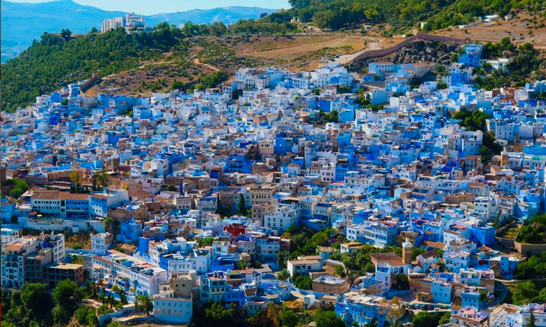
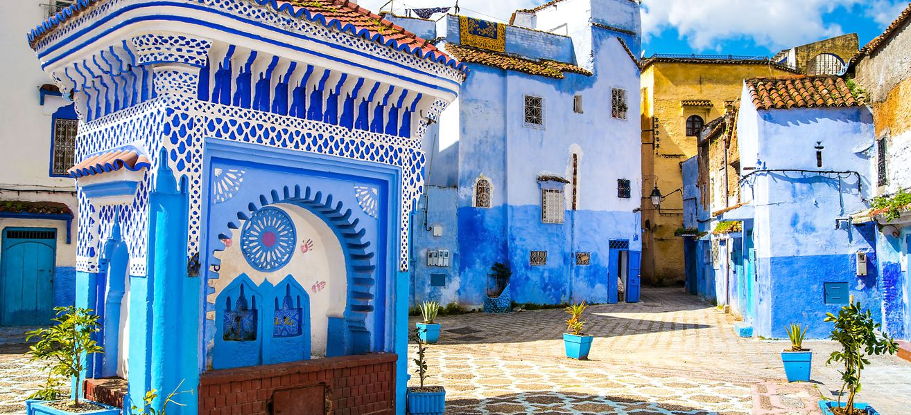
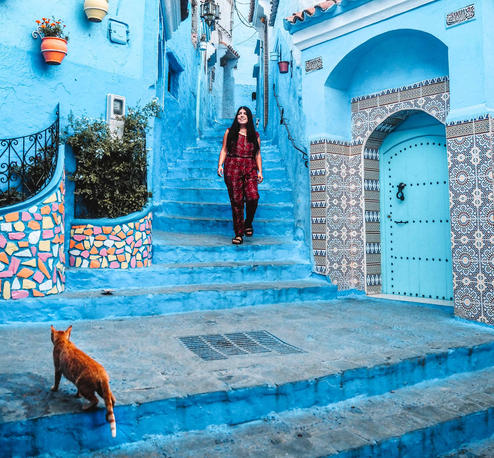

CHEFCHAOUEN
|
Initialement instiguée en 1415, Chefchaouen est fondée en 1471 puis achevée en 1480 par le chérif Ali ibn Rachid al-Alami, de retour d'un séjour guerrier dans le royaume de Grenade2. La ville accueille par la suite une population composée principalement d'Andalous puis de Morisques et demeure interdite aux Chrétiens sous peine de mort. Seul l'explorateur Charles de Foucauld brava l'interdit en 1883.Entre 1471 et 1561, la ville est gouvernée par la dynastie des Banou Rachid, descendants de son fondateur, nominalement vassaux des sultans wattassides, et sera réunifiée au Maroc par les Saadiens.En juillet 1883 l'explorateur français Charles de Foucauld est le premier Européen qui livre une description de la ville et de ses environs ; il souligne sa beauté pittoresque « avec son vieux donjon à tournure féodale, ses maisons couvertes de tuiles, ses ruisseaux qui serpentent de toutes parts, on se serait cru bien plutôt en face de quelque bourg paisible des bords du Rhin […] »3. Grâce à lui on sait que la ville comptait alors entre trois et quatre mille habitants, parmi lesquels une dizaine de familles juives à la fin du xixe siècle.En 1920, les Espagnols s'emparent de Chefchaouen, laquelle sera ensuite bombardée par l'escadrille Lafayette4 puis les troupes de Franco. La ville ne fut rétrocédée au Maroc qu'en 1956, à la suite de l'abrogation du protectorat. |
 | |
|  |
Autrefois ville sainte interdite aux étrangers, Chefchaouen ou comme l'appellent ses habitants, Chaouen ne manque pas de laisser découvrir les merveilleuses tonalités bleues de sa coquette médina.Cinq entrées différentes invitent le voyageur assoiffé d'expériences à découvrir les secrets d'une médina qui surprend par sa beauté, pleine de couleurs et de tonalités qui vont au delà du bleu marin de ses maisons et de ses ruelles.Sa médina fait preuve d'une influence très marquée des styles andalous et garde, entre les recoins de ses ruelles un mysticisme qui étonne ceux qui parcourent ses murailles.Le véritable centre de la Médina de Chaouen est situé à la place Uta El Hammam, qui sous l'ombre des muriers donne accès à la Grande Mosquée et à l'entrée de la Kasbah et de ses jardins. Non loin de là on trouve la place du Makhzen, une des photographiées de la ville et de là on peut facilement atteindre Bab El Ansar et la source d'eau de Ras El Maa, un endroit d'une grande beauté depuis lequel on peut admirer moulins d'eau, enfants en train de se baigner dans la rivière ou les femmes lavant leur linge dans les lavoirs public.A 33 kilomètres de la ville bleue de Chefchaouen, dans les environs du Parc National de Talassemtane nous retrouvons l'un des plus grands spectacles naturels du Maroc, les cascades d'Akchour. |
|
|
Les cascades, déclarées ainsi que leur environnement, réserve de la biosphère par l'Unesco en 2016, invitent à une expérience sensorielle des plus riches.Le chemin qui mène aux cascades est d'une grande beauté en plus d'être bien signalé et d'un accès aisé pour tous les membres de la famille. Le premier trajet permet aussi d'accéder à un autre accident géographique d'importance, le Pont de Dieu. En arrivant au croisement qui sépare les routes de la Cascade de celle du pont, nous prendrons la route de cette dernière en suivant le lit de la rivière El Kelaa. Malgré la faible pente, nous pouvons d'ores et déjà remarquer les premières chutes d'eau et les ponts de bois. Tout au long du chemin nous pourrons apercevoir de frêles constructions en canne et les ornements de la route comme les bancs qui aident à donner à la zone un aura magique.Au fur et à mesure que la route se complique, la beauté de la zone augmente d'un cran.Les chutes d'eau sont à chaque fois plus grandes jusqu'arriver à la grande cascade d'Akchour ou l'eau semble avoir sculpté patiemment un décor magique de formes capricieuses la roche calcaire.C'est la place la plus animée de la médina de Chefchaouèn. Dominée par la kasbah et le minaret remarquable de la Grande Mosquée, octogonal et couronné d'une « collerette » blanche, elle est bordée de très nombreuses terrasses où il sera toujours très agréable de faire une pause pour profiter de l'ambiance de la place, mais aussi des montagnes alentour qui lui servent d'écrin. |
 | |